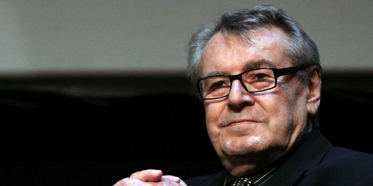

O cineasta conquistou duas estatuetas do Oscar.
|
Morreu na noite desta sexta-feira, 13 de abril de 2018, o cultuado Milos Forman, duas vezes vencedor do Oscar de Melhor Diretor. “Sua partida foi calma e ele estava cercado o tempo todo por sua família e seus amigos mais próximos”. destacou o comunicado de Martina Forman, com que o cineasta de origem tcheca estava casado desde 1999. Ele faleceu aos 86 anos, nos Estados Unidos. A causa da morte não foi anunciada. Milos despontou para o estrelato nos anos 70, quando realizou dois de seus filmes mais conhecidos: Um Estranho no Ninho e Hair. Adaptação do clássico livro de Ken Kesey, Um Estranho no Ninho rendeu ao cineasta seu primeiro Oscar de Melhor Diretor. Ele ainda viu o filme conquistar os prêmios de Melhor Filme, Melhor Roteiro, Melhor Ator (Jack Nicholson) e Melhor Atriz (Louise Fletcher). Na década seguinte, voltou a recebeu uma estatueta pela direção de Amadeus, que também recebeu o Oscar de Melhor Filme, Melhor Roteiro e Melhor Ator (F. Murray Abraham). Muito interessado em cinebiografias, Forman também realizou obras marcantes como O Povo Contra Larry Flynt e , além de Sombras de Goya, que já não recebeu tantos elogios. Ele foi presidente dos júris do Festival de Cannes (1985) e do Festival de Veneza (2000). Por Danilo Pereira — 14/04/2018 às 09:50 |